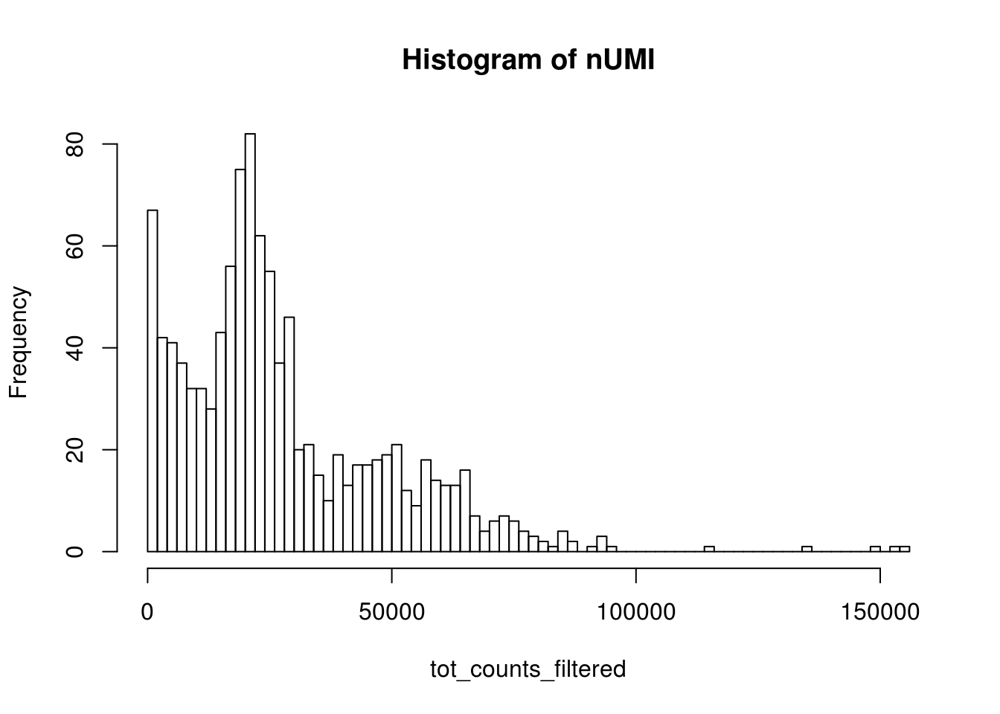
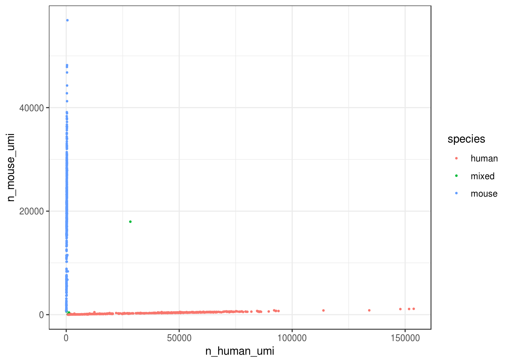
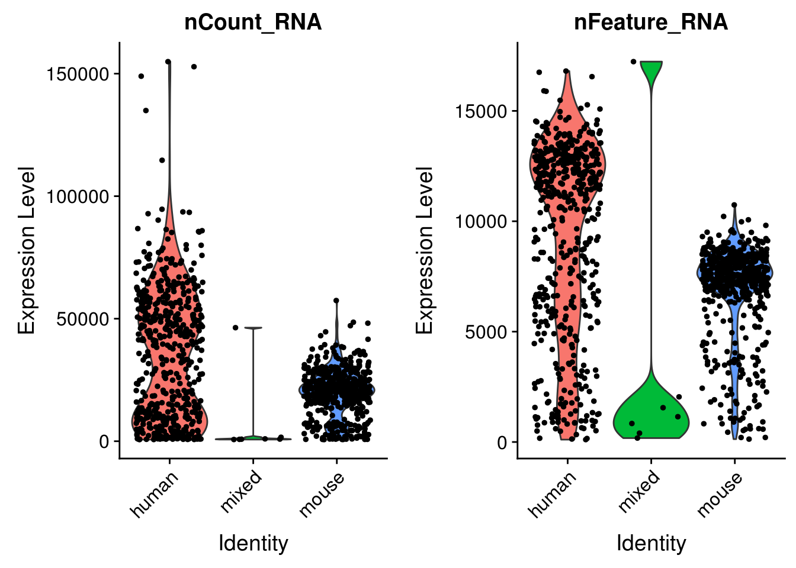
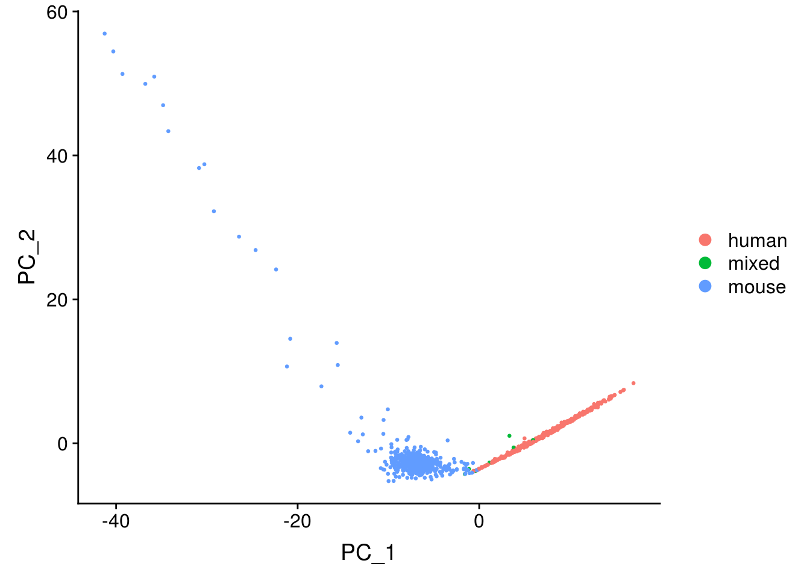
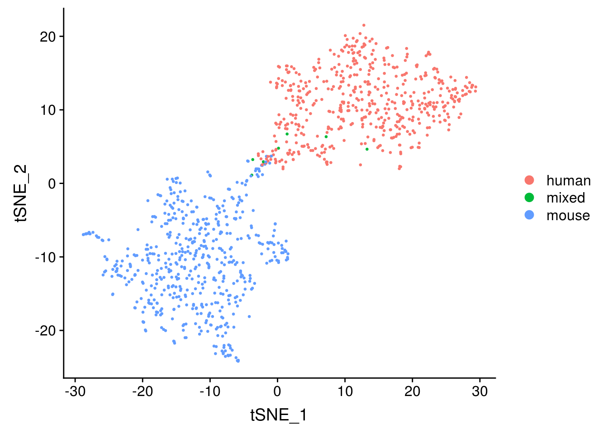

Processing kallisto bus Output (10x v3 chemistry)
Lambda Moses
2019-02-02
Last updated: 2019-02-02
workflowr checks: (Click a bullet for more information)-
✔ R Markdown file: up-to-date
Great! Since the R Markdown file has been committed to the Git repository, you know the exact version of the code that produced these results.
-
✔ Environment: empty
Great job! The global environment was empty. Objects defined in the global environment can affect the analysis in your R Markdown file in unknown ways. For reproduciblity it’s best to always run the code in an empty environment.
-
✔ Seed:
set.seed(20181214)The command
set.seed(20181214)was run prior to running the code in the R Markdown file. Setting a seed ensures that any results that rely on randomness, e.g. subsampling or permutations, are reproducible. -
✔ Session information: recorded
Great job! Recording the operating system, R version, and package versions is critical for reproducibility.
-
Great! You are using Git for version control. Tracking code development and connecting the code version to the results is critical for reproducibility. The version displayed above was the version of the Git repository at the time these results were generated.✔ Repository version: c7ecb56
Note that you need to be careful to ensure that all relevant files for the analysis have been committed to Git prior to generating the results (you can usewflow_publishorwflow_git_commit). workflowr only checks the R Markdown file, but you know if there are other scripts or data files that it depends on. Below is the status of the Git repository when the results were generated:
Note that any generated files, e.g. HTML, png, CSS, etc., are not included in this status report because it is ok for generated content to have uncommitted changes.Ignored files: Ignored: .Rhistory Ignored: .Rproj.user/ Ignored: BUSpaRse_notebooks.Rproj Ignored: analysis/10xv2_cache/ Ignored: analysis/10xv3_cache/ Ignored: data/fastqs/ Ignored: data/hgmm_100_fastqs.tar Ignored: data/hgmm_1k_fastqs.tar Ignored: data/hgmm_1k_v3_fastqs.tar Ignored: data/hgmm_1k_v3_fastqs/ Ignored: data/hs_cdna.fa.gz Ignored: data/mm_cdna.fa.gz Ignored: data/whitelist_v2.txt Ignored: data/whitelist_v3.txt.gz Ignored: output/hs_mm_tr_index.idx Ignored: output/out_hgmm100/ Ignored: output/out_hgmm1k/ Ignored: output/out_hgmm1k_v3/
Expand here to see past versions:
| File | Version | Author | Date | Message |
|---|---|---|---|---|
| html | 85a5770 | Lambda Moses | 2018-12-14 | Build site. |
| Rmd | ca1d6ce | Lambda Moses | 2018-12-14 | Clean up |
| html | 6276894 | Lambda Moses | 2018-12-14 | Build site. |
| html | 166854f | Lambda Moses | 2018-12-14 | Build site. |
| Rmd | ef5cfc5 | Lambda Moses | 2018-12-14 | Corrected stated file size |
| html | e0e7d0a | Lambda Moses | 2018-12-14 | Build site. |
| Rmd | aab422a | Lambda Moses | 2018-12-14 | Added 10xv3 notebook |
In this vignette, we process fastq data from scRNA-seq (10x v3 chemistry) to make a sparse matrix that can be used in downstream analysis. In this vignette, we will start that standard downstream analysis with Seurat. To download this notebook, please visit the GitHub repo.
This notebooks uses the R package BUSpaRse, which is not yet on CRAN or Bioconductor. Installation installation of the package is on the readme page of its GitHub repo.
Download data
The data set we are using here is 1k 1:1 Mixture of Fresh Frozen Human (HEK293T) and Mouse (NIH3T3) Cells from the 10x website. First, we download the fastq files (4.54 GB).
download.file("http://cf.10xgenomics.com/samples/cell-exp/3.0.0/hgmm_1k_v3/hgmm_1k_v3_fastqs.tar", destfile = "./data/hgmm_1k_v3_fastqs.tar", quiet = TRUE)Then untar this file
cd ./data
tar -xvf ./hgmm_1k_v3_fastqs.tar#> hgmm_1k_v3_fastqs/
#> hgmm_1k_v3_fastqs/hgmm_1k_v3_S1_L001_R2_001.fastq.gz
#> hgmm_1k_v3_fastqs/hgmm_1k_v3_S1_L002_I1_001.fastq.gz
#> hgmm_1k_v3_fastqs/hgmm_1k_v3_S1_L001_R1_001.fastq.gz
#> hgmm_1k_v3_fastqs/hgmm_1k_v3_S1_L002_R1_001.fastq.gz
#> hgmm_1k_v3_fastqs/hgmm_1k_v3_S1_L002_R2_001.fastq.gz
#> hgmm_1k_v3_fastqs/hgmm_1k_v3_S1_L001_I1_001.fastq.gzInstall devel branch of kallisto
Here we use kallisto to pseudoalign the reads to the transcriptome and then to create the bus file to be converted to a sparse matrix.
Note that for 10x v3 chemistry, we need the development branch of kallisto; 10xv3 is not supported by the current release version. See this link for an instruction to build kallisto from source. I will also demonstrate how to install the development version here:
cd ~
git clone https://github.com/pachterlab/kallisto.git
cd kallisto
# Switch to devel branch
git checkout devel
# Run autoconf, only done once, not run again when you recompile
cd ext/htslib
autoheader
autoconf
# Get back to kallisto root directory
cd ../..
# Build kallisto
mkdir build
cd build
# Run cmake
cmake -DCMAKE_INSTALL_PREFIX=<where you want the kallisto binary to be> ..
make
make installNote that if you installed the development version of kallisto in your personal directory (if you don’t have root privilege), you need to add the directory with the binary of the development version to the environment variable PATH and add the directory containing any dynamic library dependency to the environment variable LD_LIBRARY_PATH (e.g. ~/anaconda3/lib, if you used conda to install the package). If you see error like unable to load dynamic library, libhdf5.so.103 not found, while you are sure that you have installed hdf5, then you should find libhdf5.so.103 and add the directory containing it to LD_LIBRARY_PATH.
How to add something to a variable in bash? For example, in each bash chunk in RStudio:
export PATH=$PATH:/home/lambda/mylibs/bin
export LD_LIBRARY_PATH=$LD_LIBRARY_PATH:/home/lambda/miniconda3/lib
# Other bash commands...The $PATH means the existing content of the environment variable PATH, and here we are adding something new to the existing content, without overwriting the existing content. The same applies for LD_LIBRARY_PATH.
In RStudio, each bash chunk is a separate session, so you will need to add those directories to PATH and LD_LIBRARY_PATH in every single bash chunk, which is quite annoying. Also note that, if you use Linux, while every time you log in, the file .bashrc is sourced, adding non-default directories to variables like PATH, the bash chunks in R are not affected by this. The PATH and other variables are different from those you see in the terminal outside RStudio. So you will have to source ~/.bashrc in every single bash chunk, which is also quite annoying.
A way to work around this is to create a file in your home directory called .Renviron, such as in Linux terminal, with vim .Renviron. Alternatively, you can use in R file.create("~/.Renviron"), and then open that file in RStudio to edit it. Then add all the paths to command line tools you want R to find there. Then restart the R session; the .Renviron file is sourced when R starts up. Below is the content of my .Renviron:
PATH=/usr/local/sbin:/usr/local/bin:/usr/sbin:/usr/bin:/home/lambda/mylibs/bin
LD_LIBRARY_PATH=/home/lambda/mylibs/lib:/home/lambda/mylibs/lib64:/usr/lib:/usr/lib64:/home/lambda/miniconda3/libYou can see the numerous paths in my personal directory added to the environment variables. Perhaps there’s a better way, but so far, this works. The default version of kallisto in the server of our group is the release version, so for the rest of the notebook, the path ~/mylibs/bin signifies the devel version.
Build the kallisto index
The first step of the kallisto pipeline is to build an index of the transcriptome. This data set has both human and mouse cells, so we need both human and mouse transcriptomes.
# Human transcriptome
download.file("ftp://ftp.ensembl.org/pub/release-94/fasta/homo_sapiens/cdna/Homo_sapiens.GRCh38.cdna.all.fa.gz", "./data/hs_cdna.fa.gz", quiet = TRUE)
# Mouse transcriptome
download.file("ftp://ftp.ensembl.org/pub/release-94/fasta/mus_musculus/cdna/Mus_musculus.GRCm38.cdna.all.fa.gz", "./data/mm_cdna.fa.gz", quiet = TRUE)~/mylibs/bin/kallisto version#> kallisto, version 0.45.0Actually, we don’t need to unzip the fasta files
~/mylibs/bin/kallisto index -i ./output/hs_mm_tr_index.idx ./data/hs_cdna.fa.gz ./data/mm_cdna.fa.gz#>
#> [build] loading fasta file ./data/hs_cdna.fa.gz
#> [build] loading fasta file ./data/mm_cdna.fa.gz
#> [build] k-mer length: 31
#> [build] warning: clipped off poly-A tail (longer than 10)
#> from 2071 target sequences
#> [build] warning: replaced 8 non-ACGUT characters in the input sequence
#> with pseudorandom nucleotides
#> [build] counting k-mers ... done.
#> [build] building target de Bruijn graph ... done
#> [build] creating equivalence classes ... done
#> [build] target de Bruijn graph has 2138563 contigs and contains 206125466 k-mersRun kallisto bus
Here we will generate the bus file. These are the technologies supported by kallisto bus:
system("~/mylibs/bin/kallisto bus --list", intern = TRUE)#> Warning in system("~/mylibs/bin/kallisto bus --list", intern = TRUE):
#> running command '~/mylibs/bin/kallisto bus --list' had status 1#> [1] "List of supported single-cell technologies"
#> [2] ""
#> [3] "short name description"
#> [4] "---------- -----------"
#> [5] "10xv1 10x version 1 chemistry"
#> [6] "10xv2 10x version 2 chemistry"
#> [7] "10xv3 10x version 3 chemistry"
#> [8] "CELSeq CEL-Seq"
#> [9] "CELSeq2 CEL-Seq version 2"
#> [10] "DropSeq DropSeq"
#> [11] "inDrops inDrops"
#> [12] "SCRBSeq SCRB-Seq"
#> [13] "SureCell SureCell for ddSEQ"
#> [14] ""
#> attr(,"status")
#> [1] 1Here we see 10xv3 support. Here we have 2 samples. Each sample has 3 files: I1 means sample index, R1 means barcode and UMI, and R2 means the piece of cDNA. The -i argument specifies the index file we just built. The -o argument specifies the output directory. The -x argument specifies the sequencing technology used to generate this data set. The -t argument specifies the number of threads used.
cd ./data
~/mylibs/bin/kallisto bus -i ../output/hs_mm_tr_index.idx \
-o ../output/out_hgmm1k_v3 -x 10xv3 -t8 \
./hgmm_1k_v3_fastqs/hgmm_1k_v3_S1_L001_R1_001.fastq.gz \
./hgmm_1k_v3_fastqs/hgmm_1k_v3_S1_L001_R2_001.fastq.gz \
./hgmm_1k_v3_fastqs/hgmm_1k_v3_S1_L002_R1_001.fastq.gz \
./hgmm_1k_v3_fastqs/hgmm_1k_v3_S1_L002_R2_001.fastq.gz#>
#> [index] k-mer length: 31
#> [index] number of targets: 302,896
#> [index] number of k-mers: 206,125,466
#> [index] number of equivalence classes: 1,252,306
#> [quant] will process sample 1: ./hgmm_1k_v3_fastqs/hgmm_1k_v3_S1_L001_R1_001.fastq.gz
#> ./hgmm_1k_v3_fastqs/hgmm_1k_v3_S1_L001_R2_001.fastq.gz
#> [quant] will process sample 2: ./hgmm_1k_v3_fastqs/hgmm_1k_v3_S1_L002_R1_001.fastq.gz
#> ./hgmm_1k_v3_fastqs/hgmm_1k_v3_S1_L002_R2_001.fastq.gz
#> [quant] finding pseudoalignments for the reads ... done
#> [quant] processed 63,105,786 reads, 46,339,391 reads pseudoalignedSee what are the outputs
list.files("./output/out_hgmm1k_v3/")#> [1] "matrix.ec" "output.bus" "output.sorted"
#> [4] "output.sorted.txt" "run_info.json" "transcripts.txt"Run BUStools
The output.bus file is a binary. In order to make R parse it, we need to convert it into a sorted text file. There’s a command line tool bustools for this.
# Sort
bustools sort -o ./output/out_hgmm1k_v3/output.sorted -t8 ./output/out_hgmm1k_v3/output.bus
# Convert sorted file to text
bustools text -o ./output/out_hgmm1k_v3/output.sorted.txt ./output/out_hgmm1k_v3/output.sorted#> Read in 46339391 number of busrecords
#> All sorted
#> Read in 37838046 number of busrecordsMap transcripts to genes
library(BUSpaRse)For the sparse matrix, we are interested in how many UMIs per gene per cell, rather than per transcript. Remember in the output of kallisto bus, there’s the file transcripts.txt. Those are the transcripts in the transcriptome index. Now we’ll only keep the transcripts present there and make sure that the transcripts in tr2g are in the same order as those in the index. This function might be a bit slow; what’s slow is the biomart query, not processing data frames.
Note that the function transcript2gene only works for organisms that have gene and transcript IDs in Ensembl, since behind the scene, it’s using biomart to query Ensembl.
tr2g <- transcript2gene(c("Homo sapiens", "Mus musculus"),
kallisto_out_path = "./output/out_hgmm1k_v3")#> Retrieving data from biomart
#> Sortinghead(tr2g)#> transcript gene
#> 1: ENST00000434970.2 ENSG00000237235.2
#> 2: ENST00000448914.1 ENSG00000228985.1
#> 3: ENST00000415118.1 ENSG00000223997.1
#> 4: ENST00000631435.1 ENSG00000282253.1
#> 5: ENST00000390583.1 ENSG00000211923.1
#> 6: ENST00000390577.1 ENSG00000211917.1Map ECs to genes
The 3rd column in the output.sorted.txt is the equivalence class index of each UMI for each cell barcode. Equivalence class (EC) means the set of transcripts in the transcriptome that the read is compatible to. While in most cases, an EC only has transcripts for the same gene, there are some ECs that have transcripts for different genes. The file in the kallisto bus output, matrix.ec, maps the EC index in output.sorted.txt to sets of line numbers in the transcriptome assembly. That’s why we ensured that the tr2g data frame has the same order as the transcripts in the index.
genes <- EC2gene(tr2g, "./output/out_hgmm1k_v3", ncores = 10, verbose = FALSE)Now for each EC, we have a set of genes the EC is compatible to.
head(genes)#> [[1]]
#> [1] "ENSG00000237235.2"
#>
#> [[2]]
#> [1] "ENSG00000228985.1"
#>
#> [[3]]
#> [1] "ENSG00000223997.1"
#>
#> [[4]]
#> [1] "ENSG00000282253.1"
#>
#> [[5]]
#> [1] "ENSG00000211923.1"
#>
#> [[6]]
#> [1] "ENSG00000211917.1"tail(genes)#> [[1]]
#> [1] "ENSG00000196418.12" "ENSG00000178199.13" "ENSG00000011523.13"
#>
#> [[2]]
#> [1] "ENSMUSG00000094044.1" "ENSMUSG00000028188.13" "ENSMUSG00000066621.12"
#> [4] "ENSMUSG00000115886.1"
#>
#> [[3]]
#> [1] "ENSG00000121413.12" "ENSG00000117115.12" "ENSG00000117475.13"
#> [4] "ENSG00000248919.7" "ENSG00000158220.13" "ENSG00000163378.13"
#> [7] "ENSG00000124568.10" "ENSG00000196417.12" "ENSG00000149311.18"
#> [10] "ENSG00000001561.6" "ENSG00000167984.17" "ENSG00000071564.14"
#> [13] "ENSG00000240951.1"
#>
#> [[4]]
#> [1] "ENSG00000070814.19" "ENSG00000166847.9"
#>
#> [[5]]
#> [1] "ENSG00000135930.13" "ENSG00000204842.15" "ENSG00000141665.12"
#> [4] "ENSG00000163877.10" "ENSG00000197580.11" "ENSG00000131686.14"
#> [7] "ENSG00000159023.21" "ENSG00000183323.12" "ENSG00000154310.16"
#> [10] "ENSG00000113558.18" "ENSG00000277868.4"
#>
#> [[6]]
#> [1] "ENSG00000077044.10" "ENSG00000187715.13" "ENSG00000165233.17"Make the sparse matrix
library(data.table)For 10x, we do have a file with all valid cell barcodes that comes with CellRanger.
# Copy v3 chemistry whitelist to working directory
cp ~/cellranger-3.0.1/cellranger-cs/3.0.1/lib/python/cellranger/barcodes/3M-february-2018.txt.gz \
./data/whitelist_v3.txt.gz# Read in the whitelist
whitelist_v3 <- fread("./data/whitelist_v3.txt.gz", header = FALSE)$V1
length(whitelist_v3)#> [1] 6794880That’s an order of magnitude more than the 737K in v2 chemistry.
Now we have everything we need to make the sparse matrix. This function reads in output.sorted.txt line by line and processes them. It does not do barcode correction for now, so the barcode must exactly match those in the whitelist if one is provided. It took 5 to 6 minutes to construct the sparse matrix in the hgmm6k dataset, which has over 280 million lines in output.sorted.txt, which is over 9GB. Here the data set is smaller, so it’s not taking as long.
Note that the arguments est_ncells (estimated number of cells) and est_ngenes (estimated number of genes) are important. With the estimate, this function reserves memory for the data to be added into, reducing the need of reallocation, which will slow the function down. Since the vast majority of “cells” you get in this sparse matrix are empty droplets rather than cells, please put at least 200 times more “cells” than you actually expect in est_ncells.
res_mat <- make_sparse_matrix("./output/out_hgmm1k_v3/output.sorted.txt",
genes = genes, est_ncells = 3e5,
est_ngenes = nrow(tr2g),
whitelist = whitelist_v3)#> Reading data
#> Read 5 million lines
#> Read 10 million lines
#> Read 15 million lines
#> Read 20 million lines
#> Read 25 million lines
#> Read 30 million lines
#> Read 35 million lines
#> Constructing sparse matrixExplore the data
library(Seurat)
library(tidyverse)
library(parallel)
library(Matrix)Filter data
Cool, so now we have the sparse matrix. What does it look like?
dim(res_mat)#> [1] 51804 416343That’s way more cells than we expect, which is about 1000. So what’s going on?
How many UMIs per barcode?
tot_counts <- colSums(res_mat)
summary(tot_counts)#> Min. 1st Qu. Median Mean 3rd Qu. Max.
#> 1.00 1.00 1.00 82.63 4.00 154919.00The vast majority of “cells” have only a few UMI detected. Those are likely to be spurious. In Seurat’s vignettes, a low cutoff is usually set to the total number of UMIs in a cell, and that depends on the sequencing depth.
bcs_use <- tot_counts > 650
tot_counts_filtered <- tot_counts[bcs_use]
hist(tot_counts_filtered, breaks = 100, main = "Histogram of nUMI")
Expand here to see past versions of unnamed-chunk-26-1.png:
| Version | Author | Date |
|---|---|---|
| e0e7d0a | Lambda Moses | 2018-12-14 |
# Filter the matrix
res_mat <- res_mat[,bcs_use]
dim(res_mat)#> [1] 51804 1076Now this is a more reasonable number of cells.
Cell species
How many cells are from humans and how many from mice? The number of cells with mixed species indicates doublet rate.
gene_species <- ifelse(str_detect(rownames(res_mat), "^ENSMUSG"), "mouse", "human")
mouse_inds <- gene_species == "mouse"
human_inds <- gene_species == "human"
# mark cells as mouse or human
cell_species <- tibble(n_mouse_umi = colSums(res_mat[mouse_inds,]),
n_human_umi = colSums(res_mat[human_inds,]),
tot_umi = colSums(res_mat),
prop_mouse = n_mouse_umi / tot_umi,
prop_human = n_human_umi / tot_umi)# Classify species based on proportion of UMI
cell_species <- cell_species %>%
mutate(species = case_when(
prop_mouse > 0.9 ~ "mouse",
prop_human > 0.9 ~ "human",
TRUE ~ "mixed"
))ggplot(cell_species, aes(n_human_umi, n_mouse_umi, color = species)) +
geom_point(size = 0.5) +
theme_bw()
Expand here to see past versions of unnamed-chunk-30-1.png:
| Version | Author | Date |
|---|---|---|
| e0e7d0a | Lambda Moses | 2018-12-14 |
Great, looks like the vast majority of cells are not mixed.
cell_species %>%
count(species) %>%
mutate(proportion = n / ncol(res_mat))#> # A tibble: 3 x 3
#> species n proportion
#> <chr> <int> <dbl>
#> 1 human 521 0.484
#> 2 mixed 7 0.00651
#> 3 mouse 548 0.509Great, only about 0.7% of cells here are doublets, which is lower than the ~1% 10x lists. Also, it seems from the plot that most “doublets” have very few UMIs. Doublet rate tends to be lower when cell concentration is lower. However, doublets can still be formed with cells from the same species.
Seurat exploration
Note: Seurat 3.0, which is not yet on CRAN, is used in this notebook.
seu <- CreateSeuratObject(res_mat, min.cells = 3) %>%
NormalizeData(verbose = FALSE) %>%
ScaleData(verbose = FALSE) %>%
FindVariableFeatures(verbose = FALSE)# Add species to meta data
seu <- AddMetaData(seu, metadata = cell_species$species, col.name = "species")VlnPlot(seu, c("nCount_RNA", "nFeature_RNA"), group.by = "species")
Expand here to see past versions of unnamed-chunk-34-1.png:
| Version | Author | Date |
|---|---|---|
| e0e7d0a | Lambda Moses | 2018-12-14 |
seu <- RunPCA(seu, verbose = FALSE, npcs = 30)
ElbowPlot(seu, ndims = 30)
Expand here to see past versions of unnamed-chunk-35-1.png:
| Version | Author | Date |
|---|---|---|
| e0e7d0a | Lambda Moses | 2018-12-14 |
DimPlot(seu, reduction = "pca", pt.size = 0.5, group.by = "species")
Expand here to see past versions of unnamed-chunk-36-1.png:
| Version | Author | Date |
|---|---|---|
| e0e7d0a | Lambda Moses | 2018-12-14 |
The first PC separates species, as expected.
seu <- RunTSNE(seu, dims = 1:20, check_duplicates = FALSE)
DimPlot(seu, reduction = "tsne", pt.size = 0.5, group.by = "species")
Expand here to see past versions of unnamed-chunk-37-1.png:
| Version | Author | Date |
|---|---|---|
| e0e7d0a | Lambda Moses | 2018-12-14 |
The species separate, as expected.
Session information
sessionInfo()#> R version 3.5.1 (2018-07-02)
#> Platform: x86_64-redhat-linux-gnu (64-bit)
#> Running under: CentOS Linux 7 (Core)
#>
#> Matrix products: default
#> BLAS/LAPACK: /usr/lib64/R/lib/libRblas.so
#>
#> locale:
#> [1] LC_CTYPE=en_US.UTF-8 LC_NUMERIC=C
#> [3] LC_TIME=en_US.UTF-8 LC_COLLATE=en_US.UTF-8
#> [5] LC_MONETARY=en_US.UTF-8 LC_MESSAGES=en_US.UTF-8
#> [7] LC_PAPER=en_US.UTF-8 LC_NAME=C
#> [9] LC_ADDRESS=C LC_TELEPHONE=C
#> [11] LC_MEASUREMENT=en_US.UTF-8 LC_IDENTIFICATION=C
#>
#> attached base packages:
#> [1] parallel stats graphics grDevices utils datasets methods
#> [8] base
#>
#> other attached packages:
#> [1] bindrcpp_0.2.2 Matrix_1.2-15 forcats_0.3.0
#> [4] stringr_1.3.1 dplyr_0.7.8 purrr_0.3.0
#> [7] readr_1.3.1 tidyr_0.8.2 tibble_2.0.1
#> [10] ggplot2_3.1.0 tidyverse_1.2.1 Seurat_3.0.0.9000
#> [13] data.table_1.12.0 BUSpaRse_0.99.0
#>
#> loaded via a namespace (and not attached):
#> [1] Rtsne_0.15 colorspace_1.4-0 ggridges_0.5.1
#> [4] rprojroot_1.3-2 rstudioapi_0.9.0 listenv_0.7.0
#> [7] npsurv_0.4-0 ggrepel_0.8.0 bit64_0.9-7
#> [10] fansi_0.4.0 AnnotationDbi_1.44.0 lubridate_1.7.4
#> [13] xml2_1.2.0 codetools_0.2-15 splines_3.5.1
#> [16] R.methodsS3_1.7.1 lsei_1.2-0 knitr_1.21
#> [19] zeallot_0.1.0 jsonlite_1.6 workflowr_1.1.1
#> [22] broom_0.5.1 ica_1.0-2 cluster_2.0.7-1
#> [25] png_0.1-7 R.oo_1.22.0 compiler_3.5.1
#> [28] httr_1.4.0 backports_1.1.2 assertthat_0.2.0
#> [31] lazyeval_0.2.1 cli_1.0.1 htmltools_0.3.6
#> [34] prettyunits_1.0.2 tools_3.5.1 rsvd_1.0.0
#> [37] igraph_1.2.2 gtable_0.2.0 glue_1.3.0
#> [40] RANN_2.6.1 Rcpp_1.0.0 Biobase_2.42.0
#> [43] cellranger_1.1.0 gdata_2.18.0 ape_5.2
#> [46] nlme_3.1-137 gbRd_0.4-11 lmtest_0.9-36
#> [49] xfun_0.4 globals_0.12.4 rvest_0.3.2
#> [52] irlba_2.3.2 gtools_3.8.1 XML_3.98-1.16
#> [55] future_1.11.1.1 MASS_7.3-51.1 zoo_1.8-4
#> [58] scales_1.0.0 hms_0.4.2 RColorBrewer_1.1-2
#> [61] yaml_2.2.0 curl_3.3 memoise_1.1.0
#> [64] reticulate_1.10 pbapply_1.3-4 biomaRt_2.38.0
#> [67] stringi_1.2.4 RSQLite_2.1.1 S4Vectors_0.20.1
#> [70] caTools_1.17.1.1 BiocGenerics_0.28.0 bibtex_0.4.2
#> [73] Rdpack_0.10-1 SDMTools_1.1-221 rlang_0.3.1
#> [76] pkgconfig_2.0.2 bitops_1.0-6 evaluate_0.12
#> [79] lattice_0.20-38 ROCR_1.0-7 bindr_0.1.1
#> [82] labeling_0.3 htmlwidgets_1.3 cowplot_0.9.4
#> [85] bit_1.1-14 tidyselect_0.2.5 plyr_1.8.4
#> [88] magrittr_1.5 R6_2.3.0 IRanges_2.16.0
#> [91] gplots_3.0.1.1 generics_0.0.2 DBI_1.0.0
#> [94] withr_2.1.2 pillar_1.3.1 haven_2.0.0
#> [97] whisker_0.3-2 fitdistrplus_1.0-14 survival_2.43-3
#> [100] RCurl_1.95-4.11 future.apply_1.1.0 tsne_0.1-3
#> [103] modelr_0.1.2 crayon_1.3.4 utf8_1.1.4
#> [106] KernSmooth_2.23-15 plotly_4.8.0 rmarkdown_1.11
#> [109] progress_1.2.0 readxl_1.1.0 grid_3.5.1
#> [112] blob_1.1.1 git2r_0.23.0 metap_1.0
#> [115] digest_0.6.18 R.utils_2.7.0 stats4_3.5.1
#> [118] munsell_0.5.0 viridisLite_0.3.0This reproducible R Markdown analysis was created with workflowr 1.1.1